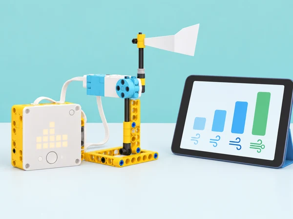
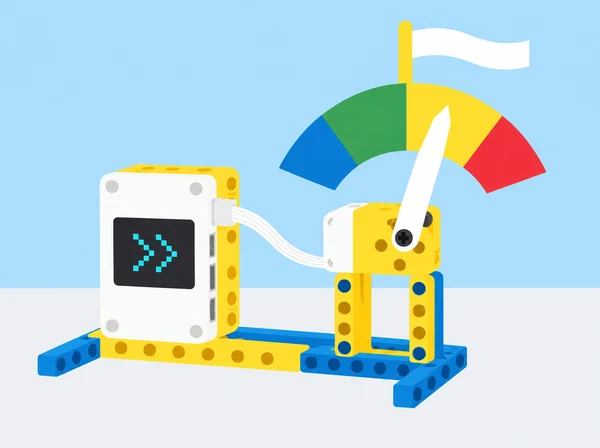

Aquesta situació adapta Wind Speed de LEGO Education. En parelles, construïm un indicador accionat per motor i programem el SPIKE Prime perquè transforme la velocitat del vent d’una previsió meteorològica quantitativa en una eixida comprensible. La classe compara unitats, calibra una escala i usa condicions per representar quatre intervals inspirats en l’escala Beaufort. El resultat és un model de dades i no una mesura local ni un avís oficial.
Converseu sobre què canvia en activitats quotidianes quan fa vent i com distingim una brisa d’un vent fort; introduïu l’escala Beaufort com una classificació de referència. En parelles, munteu un indicador mecànic simplificat amb una agulla o placa lleugera i un motor SPIKE, alineant correctament el motor perquè l’angle programat corresponga al sentit de la fletxa. Seleccioneu una ciutat pública a l’app, llegiu la dada quantitativa de velocitat i executeu el programa inicial. Descriviu què mostra i quina relació hi ha entre la dada i la posició. Si la consulta en viu no està disponible, treballeu amb una taula de valors datada i marqueu-la com a simulació arxivada. Evidència: dibuix del mecanisme, ciutat/data/unitat consultades i primera lectura de l’indicador.
Abans de programar, feu una activitat desconnectada breu: ordeneu targetes de velocitat dins de les quatre bandes i associeu-les amb els colors del model. Useu els rangs de referència de la lliçó (1–3 Beaufort, blau: 0,5–5,5 m/s; 4–6, verd: 5,5–13,8 m/s; 7–9, groc: 13,8–24,4 m/s; 10–12, roig: 24,4–32,7 m/s) i acordeu com tractareu els valors exactes de frontera perquè no queden sense categoria ni en dues alhora. Escriviu primer la taula de llindars amb unitats coherents; després programeu condicions si / si no perquè l’indicador mostre el color o angle assignat a cada tram. Tracteu 0 m/s com a calma, fora de les quatre bandes Beaufort codificades, i proveu també valors propers als llindars i un valor superior al rang; anoteu si cada cas queda classificat com s’havia previst. Cada equip explica com les condicions converteixen dades contínues en grups discrets. Qui necessite una bastida pot començar amb dos intervals; l’objectiu comú és arribar als quatre i verificar-los. Evidència: taula de llindars, pseudocodi, casos de prova i una correcció documentada.
Executeu el mateix programa amb almenys dues velocitats diferents en cadascuna de tres ciutats públiques, tal com proposa l’autoavaluació oficial, i compareu-ne les categories sense confondre-les amb condicions locals del centre. Afegiu una segona dada —la direcció del vent— representada amb fletxes a la matriu LED del hub. Com a ampliació, modifiqueu l’indicador perquè cobrisca 180° i comproveu quant tarda l’equip a recalibrar-lo; si la dotació té un segon motor lliure, afegiu-hi un dial per a la direcció. Prepareu una explicació de previsió amb dades, ubicació i hora i, si el centre ho pot organitzar, contrasteu-la amb una persona del camp de meteorologia o amb una font divulgativa fiable. Expliqueu què pot i què no pot inferir el model. No emeteu instruccions d’emergència: davant d’una situació meteorològica adversa, la informació vàlida és la dels canals oficials i les indicacions del centre. Evidència: comparació de tres ubicacions, programa amb velocitat/direcció i missatge que cita font i límits.

SPIKE Prime amb hub, un motor i peces per a una base estable i indicador lleuger; ordinador o tauleta amb app i blocs meteorològics al núvol; targetes, paper i regla. Confirmeu l’accés a dades, la ciutat consultable, la unitat de velocitat disponible i el funcionament del programa abans de la sessió. Reserveu una taula de valors amb data i unitats com a alternativa quan no hi haja internet, targetes per a l’activitat desconnectada i una plantilla d’angles per a l’ampliació de 180°. Un segon motor per a l’indicador de direcció és opcional; la matriu LED del hub ja permet representar-la.
Carpeta de procés amb la predicció inicial, muntatge, registre de dades, conversió d’unitats si cal, taula de quatre categories, programa condicional, proves dels llindars i comparació de tres ciutats. Valoreu si l’alumnat calibra l’indicador per a la unitat emprada, justifica els límits de les bandes, representa també la direcció i revisa una condició amb els resultats. Autoavaluació de tres nivells: represente dues velocitats en tres ubicacions; classifique quatre bandes; afegisc direcció o adapte el model a una escala nova. El retorn entre parelles identifica una prova que falta.
Mostreu les categories simultàniament amb color, símbol, paraula oral o tacte en targetes; no depengueu només del color. Consulteu ciutats públiques, mai ubicacions personals. Les dades del núvol descriuen una previsió per a una ubicació i hora, no les condicions exactes del pati. L’indicador no és un anemòmetre calibrat ni un dispositiu de seguretat; les dades i instruccions oficials prevalen.
La seqüència adapta Wind Speed, quarta lliçó de Life Hacks: muntatge en parelles i alineament del motor, consulta d’una ciutat, representació de dades quantitatives del núvol, quatre intervals de l’escala Beaufort amb condicions, ampliació a direcció del vent, comparació d’ubicacions, recalibratge per a altres unitats i diferenciació desconnectada amb classificació visual de les quatre bandes; recalibratge opcional del dial a 180° i extensió del segon motor per a la direcció. La situació, el registre, la programació i la il·lustració són propis; els materials docents complets remeten a l’app SPIKE.